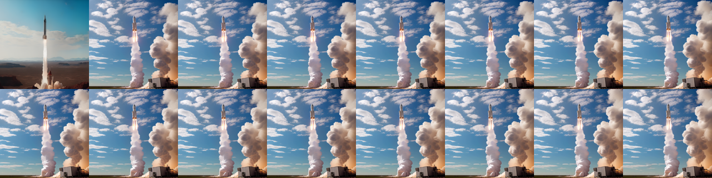
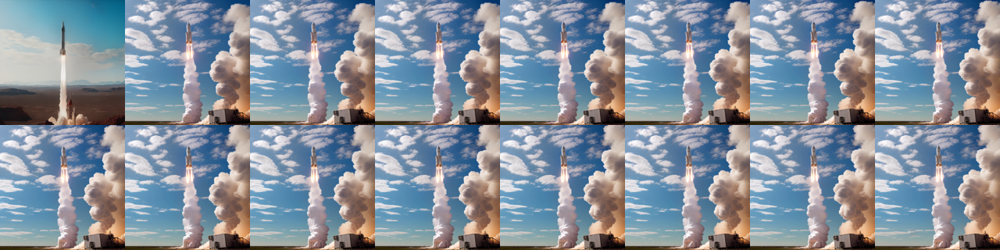
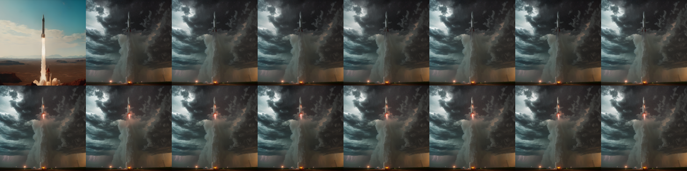
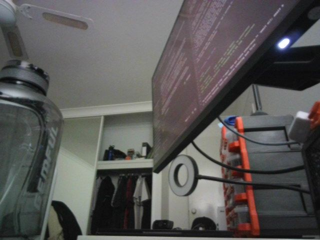
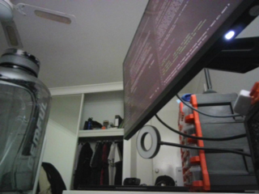
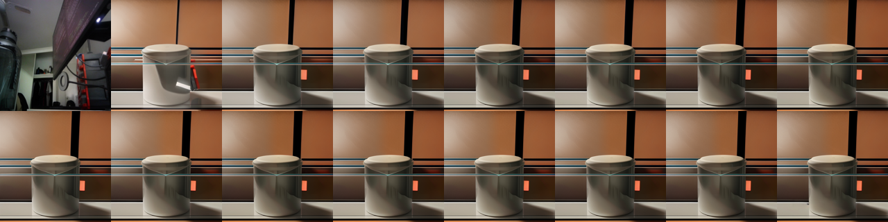

# Self-contained: this runs before the Setup cell, so it defines its own paths/device.
# These helpers are reused by every section below, including the benchmark.
from pathlib import Path
import numpy as np
import torch
from PIL import Image, ImageDraw
from transformers import CLIPModel, CLIPProcessor
_HF_CACHE = str(Path("../../datasets") / "hf_cache")
_CLIP = {}
def _clip():
"Lazily load CLIP ViT-B/32 (~150M params - small enough to stay resident all notebook)."
if not _CLIP:
dev = "cuda:0" if torch.cuda.is_available() else "cpu"
_CLIP["device"] = dev
_CLIP["proc"] = CLIPProcessor.from_pretrained("openai/clip-vit-base-patch32", cache_dir=_HF_CACHE)
_CLIP["model"] = CLIPModel.from_pretrained(
"openai/clip-vit-base-patch32", cache_dir=_HF_CACHE
).to(dev).eval()
return _CLIP
def _image_embeddings(frames):
"L2-normalised CLIP image embeddings for a list of PIL frames, on the CPU."
c = _clip()
with torch.inference_mode():
inputs = c["proc"](images=list(frames), return_tensors="pt").to(c["device"])
emb = c["model"].get_image_features(**inputs).pooler_output
return torch.nn.functional.normalize(emb.float(), dim=-1).cpu()
def _text_embedding(text):
"L2-normalised CLIP text embedding, on the CPU."
c = _clip()
with torch.inference_mode():
inputs = c["proc"](text=[text], return_tensors="pt", padding=True, truncation=True).to(c["device"])
emb = c["model"].get_text_features(**inputs).pooler_output
return torch.nn.functional.normalize(emb.float(), dim=-1).cpu()
def prompt_adherence(frames, prompt):
"Mean CLIP similarity between the frames and the prompt. Blind to motion - see section 11."
return float((_image_embeddings(frames) @ _text_embedding(prompt).T).mean())
def first_frame_fidelity(frames, source):
"CLIP similarity between the conditioning image and frame 0. Did it keep your subject?"
embs = _image_embeddings([source, frames[0]])
return float((embs[0] * embs[1]).sum())
def frame_consistency(frames):
"Cosine similarity between adjacent frames. 1.0 means a static clip - read with dynamic_degree."
emb = _image_embeddings(frames)
return float((emb[:-1] * emb[1:]).sum(-1).mean())
def dynamic_degree(frames):
"Mean absolute pixel change between adjacent frames (0-1). The counterweight to consistency."
arr = np.stack([np.asarray(f.convert("RGB"), dtype=np.float32) / 255.0 for f in frames])
return float(np.abs(arr[1:] - arr[:-1]).mean())Image-Text-to-Video
Everything to know about prompt-steered image animation: what the text actually controls once you have fixed the first frame, the mid-2026 model landscape, how to measure whether the prompt did anything at all, and runnable code on a 12 GB card.
1. What is Image-Text-to-Video?
Image-text-to-video takes one image plus a text prompt and produces a short video clip. The image pins down what the scene is; the prompt is supposed to decide what happens in it.
That split is the whole task. Pure image-to-video (Computer_Vision/07) has no prompt, so the model invents plausible motion and you get whatever it feels like - Stable Video Diffusion will pan a camera over your photo and there is nothing you can say to stop it. Text-to-video (Computer_Vision/10) has full prompt control but no anchor, so you cannot start from a specific frame. This family is the intersection that production actually wants: your image, your motion.
Input. One conditioning image (usually the first frame; some models take first and last), a motion prompt, and normally a negative prompt. Resolution and frame count are constrained by the architecture: SD 1.5-based models want 512x512 and 16 frames, DiT models want dimensions divisible by 32 and frame counts of the form 8k+1.
Output. A tensor of frames, typically 16-121 of them at 8-24 FPS, i.e. 2 to 5 seconds. Longer clips are made by chaining, not by generating.
| Neighbouring task | Difference | Typical tools |
|---|---|---|
Image-to-video (Computer_Vision/07) |
No prompt. The model chooses the motion | Stable Video Diffusion |
Text-to-video (Computer_Vision/10) |
No conditioning image; full creative freedom | LTX-Video, Wan 2.x, HunyuanVideo |
Video-to-video (Computer_Vision/18) |
Input is already a video; restyle or edit it | AnimateDiff-vid2vid, ControlNet |
Image-text-to-image (Multimodal/02) |
One frame out, not many | InstructPix2Pix, FLUX Kontext |
Video-text-to-text (Multimodal/06) |
Video in, text out | Qwen3-VL, SmolVLM2 |
Where the difficulty is. Three things at once, and models trade between them:
- First-frame fidelity. The output must actually start from your image. Weak conditioning gives you a video “inspired by” the photo, with the subject’s identity quietly redrawn in frame 1.
- Prompt adherence. The motion must be the motion you asked for. This is the property most 2024-era models did worst on, and the one section 11 measures rather than assumes.
- Temporal coherence. No flicker, no morphing limbs, no objects popping in and out. The degenerate solution - output a static clip - scores perfectly on this and is worthless, which is why coherence is never reported alone.
2. Real-World Use Cases
| Use case | Domain | Consumes / produces | Dominant constraint |
|---|---|---|---|
| Social and short-form content | Marketing, creators (Runway, Pika, Kling, Sora) | Still + motion prompt -> 5 s clip | Cost per clip and turnaround; the first frame must stay on-brand |
| Product animation for e-commerce | Retail | Packshot + “slowly rotate, studio lighting” -> loop | Product identity must not drift a single frame |
| Advertising variants | Advertising | One key visual + N prompts -> N motion treatments | Consistency across a set; brand-safety review |
| Film pre-visualisation and storyboards | Media, VFX | Concept frame + camera instruction -> animatic | Camera-motion control (“dolly in”, “pan left”); art-director iteration speed |
| Talking-head and avatar video | EdTech, corporate comms, localisation | Portrait + audio or script -> lip-synced clip | Lip-sync accuracy, identity preservation; disclosure and consent |
| Real-estate walkthroughs | Property | Interior photo + “slow dolly forward” -> clip | Geometric plausibility; no hallucinated rooms |
| Archive and photo revival | Consumer apps, museums | Historical photo + subtle motion -> living portrait | Restraint; ethical framing of depicting real people |
| Game and world prototyping | Games | Concept art + “camera orbits the tower” -> reference | Style consistency; iteration cost |
| Synthetic data for perception | Autonomous driving, robotics | Scene image + “pedestrian crosses left to right” -> labelled clip | Physical plausibility; label validity through the clip |
| Medical and scientific illustration | Education | Diagram + “show the fluid flowing” -> explainer | Factual accuracy; no invented mechanism |
What the demo reels hide. Four realities.
Clips are short, and that is architectural. Attention over frames is quadratic and the 3D VAE latents are enormous, so 5 seconds is the practical ceiling for a single generation. Everything longer is chained: take the last frame, condition again, and accept drift. Drift accumulation is the reason the 2025 in-context and long-context video models matter.
Prompt adherence is much weaker than in image models. Motion vocabulary in training captions is thin (“a man walking” appears a million times, “the camera cranes up while the subject turns away” appears rarely), so models fall back on generic motion. Detailed cinematography prompts work far better than short ones - this family is the one place where a 60-word prompt genuinely beats a 6-word one.
Compute is the deployment constraint, full stop. A 5 s 720p clip from a 14B model is a minute or more on an A100 and simply does not fit on a consumer card without quantization plus offload. Everything runnable in this notebook is small and short for that reason, and section 10 is explicit about what the good models cost.
Provenance and consent are not optional. Animating a real person’s photograph is the single highest-risk application in this notebook. Production systems require consent for likeness, apply C2PA credentials and watermarks, and refuse public-figure prompts.
3. How Modern Image-Text-to-Video Works
Image animation without video training (2022-2023). Warp-and-inpaint, cinemagraph methods, and latent-space tricks that gave you parallax and looping water. No semantic control at all.
Motion modules on a frozen image model (AnimateDiff, 2023). The idea that made open video generation practical: freeze a Stable Diffusion 1.5 UNet, insert temporal attention layers between the spatial blocks, and train only those on video. Any SD 1.5 checkpoint or LoRA instantly becomes a video model, and the text prompt still works because the spatial layers were never touched. SparseCtrl (2023) added the missing piece for this task - a ControlNet-style encoder that pins specific frames to specific images, so you can condition on your photo as frame 0. That combination is genuinely image-text-to-video and it is what section 8 runs.
Image conditioning by concatenation (Stable Video Diffusion, 2023). SVD encodes the conditioning image into the latents and cross-attends its CLIP embedding, producing 14-25 frames of high-quality motion - and it takes no text prompt at all. It is the cleanest demonstration of what this family is not, which is why section 9 uses it as the control.
Diffusion transformers with 3D VAEs (2024). Replace the UNet with a transformer over spatiotemporal patches and compress time as well as space in the VAE. CogVideoX (2024) used a 3D causal VAE with expert transformer blocks and shipped an explicit
-I2Vvariant; LTX-Video (2024) pushed the VAE to a 1:192 compression ratio so a 2B model generates faster than real time on datacentre hardware. This is where prompt adherence improved sharply, because the text encoder became a real T5-XXL rather than CLIP.Flow matching at scale (2025). Wan 2.1/2.2 (Alibaba, Apache 2.0) with its Wan-VAE and a 1.3B variant that fits consumer cards; HunyuanVideo (13B) and its I2V variant; SkyReels V2 for long-form. Wan 2.2 introduced a mixture-of-experts denoiser (separate high-noise and low-noise experts) and a 5B TI2V model at 720p/24fps that is explicitly aimed at consumer GPUs.
Distillation and real-time (2025-2026). Step distillation (LTX-Video distilled, CausVid, Wan-Turbo) cuts 30-50 steps to 4-8, which is the difference between a minute and a few seconds per clip. Autoregressive/causal video models generate frame-by-frame with a KV cache, enabling streaming and interactive control.
Where it is going. Longer coherent clips through memory and in-context conditioning, native audio-video joint generation (Veo 3, Sora 2, and the open MMAudio-style pipelines), and camera/trajectory control as a first-class input rather than a prompt phrase.
Mid-2026 state. The open frontier (Wan 2.2, HunyuanVideo-I2V, LTX-Video 13B) is 5-14B parameters and 20-70 GB of weights, and the closed frontier (Veo 3, Sora 2, Kling 2.5, Seedance) is well ahead of it on physics and prompt adherence. What runs on a 12 GB card is the 2023-24 tier: AnimateDiff at 512 px and, with 4-bit quantization plus offload, LTX-Video 2B and CogVideoX-5B. That gap is real and this notebook does not pretend otherwise.
4. Evaluation Metrics
Video generation is the hardest family in this repo to evaluate, and the reason is simple: the do-nothing model wins most metrics. A clip that repeats your conditioning image 16 times has perfect temporal consistency, perfect first-frame fidelity, and zero value.
So report at least four numbers, and always in a group:
Prompt adherence (CLIP-T). Mean CLIP cosine between each frame and the prompt text. It is the only cheap signal that the words did anything, and it is weak - CLIP was trained on stills and cannot see motion, so “a rocket launching” and “a rocket standing still” score almost the same. Section 11 works around this with a cross-prompt matrix: generate with prompt A, score against prompts A, B and C, and check that the diagonal wins. If it does not, the model ignored your prompt.
First-frame fidelity. CLIP (or better, DINO) similarity between the conditioning image and frame 0. Low means the model redrew your subject before it started moving.
Temporal consistency. Mean CLIP cosine between adjacent frames. Higher is smoother; 1.0 means static.
Dynamic degree. Mean absolute pixel difference between adjacent frames. This is the counterweight that catches the static-clip cheat. Report it next to consistency, never instead of it.
The real benchmark: VBench-I2V. VBench decomposes quality into 16 dimensions, and VBench-I2V adds the ones specific to this task: I2V subject consistency, I2V background consistency, and camera-motion controllability. It uses DINO, CLIP, RAFT optical flow, AMT and a laion aesthetic predictor, and it is what published numbers mean. It is also a multi-GPU-hour evaluation, which is why the cheap proxies above exist.
Human preference remains the ground truth. The Artificial Analysis video arena and internal side-by-sides are what studios actually use.
The cell below implements the four proxies and demonstrates the static-clip failure with a synthetic example.
def moving_square(n=16, size=224):
"A white square translating across a black canvas - honest, if minimal, motion."
out = []
for t in range(n):
img = Image.new("RGB", (size, size), "black")
x = 20 + int(t * (size - 90) / (n - 1))
ImageDraw.Draw(img).rectangle([x, 90, x + 50, 140], fill="white")
out.append(img)
return out
moving = moving_square()
static = [moving[0]] * 16 # the degenerate "video" that games every consistency metric
print(f"{'clip':16s} {'consistency':>12s} {'dynamic':>9s} {'fidelity':>9s}")
for name, frames in [("moving square", moving), ("static repeat", static)]:
print(f"{name:16s} {frame_consistency(frames):12.4f} {dynamic_degree(frames):9.4f} "
f"{first_frame_fidelity(frames, moving[0]):9.4f}")
print("\nThe static clip scores a PERFECT 1.0 on consistency and 1.0 on first-frame fidelity.")
print("Two of the four metrics rank the do-nothing model first. Never report them alone.")clip consistency dynamic fidelityWarning: You are sending unauthenticated requests to the HF Hub. Please set a HF_TOKEN to enable higher rate limits and faster downloads.moving square 0.9951 0.0182 1.0000
static repeat 1.0000 0.0000 1.0000
The static clip scores a PERFECT 1.0 on consistency and 1.0 on first-frame fidelity.
Two of the four metrics rank the do-nothing model first. Never report them alone.5. Datasets
| Dataset | Contents | Size | Scope | License | Typical use |
|---|---|---|---|---|---|
| WebVid-10M | Stock-footage clips with alt-text captions | 10M clips | en | research (withdrawn 2024) | The historical pretraining set (AnimateDiff, ModelScope); watermarked |
| Panda-70M | YouTube clips with auto-generated captions | 70M clips | en | research | Large-scale caption-video pretraining |
| OpenVid-1M | High-quality curated clips with dense captions | 1M | en | CC-BY 4.0 | Open, licensable alternative to WebVid |
| InternVid | Clips with multi-scale generated captions | 234M | en | Apache 2.0 | Large-scale video-text pretraining |
| HD-VILA-100M | High-resolution diverse video | 100M | en | research | HD fine-tuning |
| VBench / VBench-I2V | Prompt suites + evaluation harness | 900+ prompts | en | Apache 2.0 | The standard evaluation, incl. I2V-specific dimensions |
| EvalCrafter | 700 prompts, 17 objective metrics | 700 | en | Apache 2.0 | Alternative eval suite |
| DAVIS 2017 | Short high-quality real clips with masks | 150 clips | n/a | CC-BY | Source frames, and video-to-video evaluation |
| UCF-101 | Action clips, 101 classes | 13k | n/a | research | FVD reference distribution; action fidelity |
This notebook does not train anything, so it needs no training corpus. It conditions on one image (the canonical SVD rocket frame, a 1024x576 PNG from the diffusers documentation assets) and a small set of hand-written motion prompts, and it evaluates with the section-4 proxies. For numbers that mean something publicly, run VBench-I2V: its I2V subject-consistency and camera-motion dimensions are exactly what this task needs and what the proxies here only approximate.
6. The Model Landscape (mid-2026)
Rankings: VBench leaderboard (objective, 16 dimensions, has an I2V track) and the Artificial Analysis video arena (human preference, includes closed models).
| Model | Params | License | Text prompt? | Download | Best for |
|---|---|---|---|---|---|
| Stable Video Diffusion XT | 1.5B | SAI non-commercial | no | ~4 GB (fp16) | high-quality generic motion; the control in section 9 |
| AnimateDiff + SparseCtrl | 1.4B (SD 1.5 + adapters) | Apache 2.0 | yes | ~4 GB | this notebook’s runnable model; any SD 1.5 style, real prompt control |
| CogVideoX-5b-I2V | 5B + T5-XXL | CogVideoX license | yes | ~21 GB | strong 720x480 I2V; needs 4-bit + offload here |
| LTX-Video 2B / 13B | 2B / 13B + T5-XXL | LTX open (2B) | yes | ~20 GB / ~60 GB | the fast DiT; distilled variants run in 4-8 steps |
| Wan 2.2 TI2V-5B | 5B | Apache 2.0 | yes | ~34 GB | 720p 24fps aimed at consumer cards; MoE denoiser |
| Wan 2.2 I2V-A14B | 14B MoE | Apache 2.0 | yes | ~60 GB | open quality frontier for I2V |
| HunyuanVideo-I2V | 13B | Tencent community | yes | ~50 GB | cinematic quality; heavy |
| SkyReels V2 | 14B | Apache 2.0 | yes | ~60 GB | long-form, infinite-length chaining |
| Kling 2.5, Runway Gen-4, Veo 3, Sora 2, Seedance | closed | API | yes | n/a | the actual quality frontier; physics and audio |
Who wins what. On raw quality and physical plausibility the closed models lead by a wide margin in 2026, with Veo 3 and Sora 2 also generating synchronised audio. Among open weights, Wan 2.2 I2V-A14B and HunyuanVideo-I2V are the quality leaders; Wan 2.2 TI2V-5B is the best quality-per-GB; LTX-Video distilled is the speed leader; and AnimateDiff remains the only option that runs comfortably in single-digit gigabytes while still listening to a prompt.
What fits this 12 GB box. AnimateDiff+SparseCtrl at 512x512, 16 frames, is a couple of minutes per clip and runs by default (section 8). SVD-XT at 576x1024 runs too, promptless (section 9). LTX-Video 2B and CogVideoX-5B run only with 4-bit NF4 on both the DiT and the T5-XXL text encoder plus CPU offload, and their downloads are ~20 GB each - dominated by a fp32 T5-XXL that quantization cannot shrink, because bitsandbytes quantizes after the download. Both sit behind RUN_HEAVY. Wan 2.2 and HunyuanVideo are out of reach on disk alone.
7. Setup
Video generators are diffusers-native, so this notebook uses diffusers pipelines; CLIP for the metrics comes from transformers. No vendor packages. Package roles:
diffusers(>=0.39) +torch- AnimateDiff+SparseCtrl, SVD, LTX-Video, CogVideoXtransformers- CLIP for the section-4 proxies, and the T5 text encoders inside the DiT pipelinesaccelerate-enable_model_cpu_offload/enable_sequential_cpu_offloadbitsandbytes- 4-bit NF4 for the heavy pipelines (CUDA only)pillow- frames, contact sheets, GIF export viadiffusers.utils.export_to_gifpyecharts+pandas- benchmark chart and table
Three habits that keep a video pipeline inside 12 GB:
- Offload rather than
.to(device).enable_model_cpu_offload()keeps one submodule resident at a time (peak ~= the largest submodule);enable_sequential_cpu_offload()goes layer-by-layer for a big speed cost. Offloaded weights live in system RAM, which is whyfree_memory()must callmalloc_trim(0). - Slice or tile the VAE. Decoding all frames at once is a multi-gigabyte spike that has nothing to do with the model size.
- Watch the frame-count rules. SD 1.5 motion modules were trained at 16 frames; LTX wants
8k+1frames and dimensions divisible by 32; CogVideoX-5b-I2V is fixed at 720x480 with(n-1) % 4 == 0. Violating these produces either an exception or, worse, silent garbage.
All downloads land in DL_tasks/datasets/, which is gitignored.
# diffusers for the video models, transformers for CLIP. No vendor packages.
# %pip install -q torch diffusers transformers accelerate pillow pandas pyecharts
# Optional: 4-bit quantization, needed only for the RUN_HEAVY sections
# %pip install -q bitsandbytesimport ctypes
import ctypes.util
import gc
import time
import urllib.request
from pathlib import Path
import torch
from dotenv import find_dotenv, load_dotenv
# Knowledge/.env sets HF_TOKEN - authenticated HF Hub requests get higher rate limits
load_dotenv(find_dotenv(usecwd=True))
device = "cuda:0" if torch.cuda.is_available() else "cpu"
dtype = torch.float16 if device != "cpu" else torch.float32
if device != "cpu":
print(torch.cuda.get_device_name(0))
print("device:", device, "| dtype:", dtype)
# Download budget. Models over ~8 GB stay OFF by default: a fp32 T5-XXL text encoder is
# 10-19 GB on its own, and 4-bit quantization only shrinks VRAM, never the download.
RUN_HEAVY = False
def vram(tag=""):
"Report current GPU memory (allocated / reserved). No-op on CPU."
if torch.cuda.is_available():
alloc = torch.cuda.memory_allocated() / 1e9
reserved = torch.cuda.memory_reserved() / 1e9
print(f"VRAM {tag:22s} {alloc:5.2f} GB allocated / {reserved:5.2f} GB reserved")
def free_memory():
"Collect garbage, empty the CUDA cache, and return freed CPU RAM to the OS."
gc.collect()
if torch.cuda.is_available():
torch.cuda.empty_cache()
torch.cuda.ipc_collect()
# glibc keeps freed CPU allocations in its arenas instead of returning them to the
# OS, so RSS compounds across sections - and cpu-offloaded video weights are
# gigabytes of system RAM each. malloc_trim(0) hands the freed arenas back. See
# dl-visualization-and-memory.instructions.md - not optional on a 12 GB box.
try:
ctypes.CDLL(ctypes.util.find_library("c") or "libc.so.6").malloc_trim(0)
except Exception:
pass
def offload(pipe):
"Pick the offload strategy for the VRAM actually free right now, not the card size."
if device == "cpu":
return pipe
import torch.nn as nn
# bitsandbytes-quantized weights are pinned to the GPU; enable_sequential_cpu_offload
# first moves the whole pipeline to CPU and STALLS on them (a hang, not a catchable
# error), so a quantized pipeline must use model-level offload.
quantized = any(getattr(m, "is_quantized", False)
for m in pipe.components.values() if isinstance(m, nn.Module))
free_gb = torch.cuda.mem_get_info()[0] / 1e9 # global free VRAM - counts other processes
if free_gb < 8.0 and not quantized:
try:
pipe.enable_sequential_cpu_offload(device=device)
print(f"offload: sequential ({free_gb:.1f} GB VRAM free - expect slow steps)")
return pipe
except Exception as e:
print(f"offload: sequential unsupported here ({type(e).__name__}) - using model-level")
pipe.enable_model_cpu_offload(device=device)
print(f"offload: {'quantized -> ' if quantized else ''}model-level ({free_gb:.1f} GB VRAM free)")
return pipe
def vae_savers(pipe):
"Enable whatever VAE memory-savers this pipeline supports (varies by model)."
vae = getattr(pipe, "vae", None)
for name in ("enable_slicing", "enable_tiling"):
fn = getattr(vae, name, None)
if fn is None:
continue
try:
fn()
except NotImplementedError: # e.g. SVD's AutoencoderKLTemporalDecoder
pass
def reset_peak():
"Zero the CUDA peak-memory counter before timing a pipeline."
if torch.cuda.is_available():
torch.cuda.reset_peak_memory_stats()
def peak_vram():
"Peak VRAM (GB) allocated since the last reset_peak(). None on CPU."
return torch.cuda.max_memory_allocated() / 1e9 if torch.cuda.is_available() else None
# All downloads go to DL_tasks/datasets/ (gitignored)
DATA_DIR = Path("../../datasets")
DATA_DIR.mkdir(exist_ok=True)
HF_CACHE = str(DATA_DIR / "hf_cache")NVIDIA GeForce RTX 3060
device: cuda:0 | dtype: torch.float16from diffusers.utils import export_to_gif, load_image
from IPython.display import Image as IPyImage
from IPython.display import display
from PIL import Image
# One conditioning image for the whole notebook: the canonical SVD demo frame.
SOURCE_PATH = DATA_DIR / "svd_rocket.png"
if not SOURCE_PATH.exists():
urllib.request.urlretrieve(
"https://huggingface.co/datasets/huggingface/documentation-images/resolve/main/diffusers/svd/rocket.png",
SOURCE_PATH,
)
SOURCE = load_image(str(SOURCE_PATH))
# Three prompts over the SAME image. Section 11 checks whether the model can tell them
# apart at all - the question this whole notebook exists to ask.
PROMPTS = {
"liftoff": ("A rocket lifts off from the launch pad, thick white exhaust plumes billowing "
"outward, the rocket rising steadily into a clear blue sky. Static camera, "
"realistic footage."),
"orbit": ("The camera slowly orbits around the stationary rocket on the launch pad, "
"revealing it from a new angle. The rocket does not move. Smooth cinematic "
"camera movement."),
"storm": ("A violent thunderstorm rolls in over the launch pad, dark clouds churning and "
"lightning flashing across the sky. The rocket stands still. Static camera."),
}
NEGATIVE = "worst quality, inconsistent motion, blurry, jittery, distorted, static image"
def contact_sheet(frames, cols=8, width=160):
"Tile frames into a single PIL image so a clip is visible in the rendered docs."
n = len(frames)
rows = (n + cols - 1) // cols
w = width
h = int(width * frames[0].height / frames[0].width)
sheet = Image.new("RGB", (cols * w, rows * h), "black")
for i, f in enumerate(frames):
sheet.paste(f.resize((w, h)), ((i % cols) * w, (i // cols) * h))
return sheet
def show_clip(frames, name, prompt=None, fps=8):
"Write a GIF into DATA_DIR, display it, and print the section-4 proxy metrics."
path = DATA_DIR / f"itv_{name}.gif"
export_to_gif(frames, str(path), fps=fps)
display(IPyImage(filename=str(path)))
display(contact_sheet(frames))
stats = {
"frames": len(frames),
"consistency": round(frame_consistency(frames), 4),
"dynamic": round(dynamic_degree(frames), 4),
"first_frame": round(first_frame_fidelity(frames, SOURCE), 4),
}
if prompt is not None:
stats["adherence"] = round(prompt_adherence(frames, prompt), 4)
print(name, "|", " ".join(f"{k} {v}" for k, v in stats.items()))
return stats
print(SOURCE.size)
display(SOURCE.resize((512, 288)))(1024, 576)
8. AnimateDiff + SparseCtrl - the runnable image-text-to-video model
The only combination in this notebook that does the full task in single-digit gigabytes, and it is worth understanding why it works.
- AnimateDiff inserts temporal attention layers into a frozen Stable Diffusion 1.5 UNet and trains only those on video. The spatial layers - and therefore the text conditioning - are untouched, which is why the prompt still steers the result and why any SD 1.5 checkpoint (here
SG161222/Realistic_Vision_V5.1_noVAE) can be dropped in as the visual style. - SparseCtrl RGB is a ControlNet-style encoder that accepts a sparse set of conditioning frames and their indices. Pinning our photo to frame 0 turns “text-to-video” into “image-text-to-video”. Pin frames 0 and 15 instead and you get interpolation between two stills.
- A motion LoRA adds a camera-motion bias (pan, zoom, tilt) on top.
Constraints to respect: 512x512 (SD 1.5’s native scale - off-scale generation degrades fast), 16 frames, and a motion module trained at 8 FPS, so the clip is 2 seconds.
Load order matters: attach the LoRA while the pipeline is still on the CPU, then offload. Loading LoRA weights onto accelerate-hooked (already offloaded) modules is fragile.
from diffusers import AnimateDiffSparseControlNetPipeline, DPMSolverMultistepScheduler
from diffusers.models import AutoencoderKL, MotionAdapter, SparseControlNetModel
base_id = "SG161222/Realistic_Vision_V5.1_noVAE" # any SD 1.5 checkpoint works here
motion_adapter = MotionAdapter.from_pretrained(
"guoyww/animatediff-motion-adapter-v1-5-3", torch_dtype=dtype, cache_dir=HF_CACHE
)
controlnet = SparseControlNetModel.from_pretrained(
"guoyww/animatediff-sparsectrl-rgb", torch_dtype=dtype, cache_dir=HF_CACHE
)
vae = AutoencoderKL.from_pretrained(
"stabilityai/sd-vae-ft-mse", torch_dtype=dtype, cache_dir=HF_CACHE
)
scheduler = DPMSolverMultistepScheduler.from_pretrained(
base_id, subfolder="scheduler", beta_schedule="linear",
algorithm_type="dpmsolver++", use_karras_sigmas=True, cache_dir=HF_CACHE,
)
ad = AnimateDiffSparseControlNetPipeline.from_pretrained(
base_id, motion_adapter=motion_adapter, controlnet=controlnet, vae=vae,
scheduler=scheduler, torch_dtype=dtype, cache_dir=HF_CACHE,
)
# Load the LoRA while the pipeline is still on CPU, then offload - loading LoRA onto
# accelerate-hooked (offloaded) modules is fragile, so the order matters.
ad.load_lora_weights(
"guoyww/animatediff-motion-lora-v1-5-3", adapter_name="motion_lora", cache_dir=HF_CACHE
)
offload(ad)
vae_savers(ad)
vram("animatediff loaded")
def animate(prompt, image=SOURCE, steps=25, seed=0, scale=1.0):
"One image + one prompt -> 16 frames. Our image is pinned to frame 0 by SparseCtrl."
return ad(
prompt=prompt,
negative_prompt=NEGATIVE,
num_inference_steps=steps,
conditioning_frames=image.resize((512, 512)), # SD 1.5 native resolution
controlnet_frame_indices=[0], # pin our image to frame 0
controlnet_conditioning_scale=scale,
generator=torch.Generator(device="cpu").manual_seed(seed),
).frames[0]
reset_peak()
t0 = time.perf_counter()
liftoff = animate(PROMPTS["liftoff"])
ad_secs, ad_peak = time.perf_counter() - t0, peak_vram()
print(f"{ad_secs:.0f}s for {len(liftoff)} frames | peak {ad_peak:.2f} GB")
ad_stats = show_clip(liftoff, "animatediff_liftoff", PROMPTS["liftoff"])/home/bthek1/Knowledge/.venv/lib/python3.14/site-packages/huggingface_hub/utils/_validators.py:205: UserWarning: The `local_dir_use_symlinks` argument is deprecated and ignored in `hf_hub_download`. Downloading to a local directory does not use symlinks anymore.
warnings.warn(
The config attributes {'addition_embed_type': None, 'addition_embed_type_num_heads': 64, 'addition_time_embed_dim': None, 'class_embed_type': None, 'encoder_hid_dim': None, 'encoder_hid_dim_type': None, 'num_class_embeds': None, 'projection_class_embeddings_input_dim': None} were passed to SparseControlNetModel, but are not expected and will be ignored. Please verify your config.json configuration file.There are modules in UNetMotionModel that should be kept in float32: []. Casting directly with `to()` can lead to inconsistent results; set `torch_dtype` in `from_pretrained()` instead to keep these modules in float32.
No LoRA keys associated to CLIPTextModel found with the prefix='text_encoder'. This is safe to ignore if LoRA state dict didn't originally have any CLIPTextModel related params. You can also try specifying `prefix=None` to resolve the warning. Otherwise, open an issue if you think it's unexpected: https://github.com/huggingface/diffusers/issues/newoffload: model-level (11.5 GB VRAM free)
VRAM animatediff loaded 0.61 GB allocated / 0.68 GB reserved81s for 16 frames | peak 7.22 GB<IPython.core.display.Image object>
animatediff_liftoff | frames 16 consistency 0.9944 dynamic 0.0225 first_frame 0.9578 adherence 0.2985# The conditioning scale is the first-frame-fidelity dial: how hard SparseCtrl pins your
# image to frame 0. Low lets the model redraw your subject; high can freeze the clip.
for scale in (0.4, 1.0):
frames = animate(PROMPTS["liftoff"], scale=scale, steps=20)
s = show_clip(frames, f"animatediff_scale{scale}", PROMPTS["liftoff"])
print(f" controlnet_conditioning_scale={scale}\n")<IPython.core.display.Image object>animatediff_scale0.4 | frames 16 consistency 0.9971 dynamic 0.0157 first_frame 0.9471 adherence 0.2954
controlnet_conditioning_scale=0.4
<IPython.core.display.Image object>animatediff_scale1.0 | frames 16 consistency 0.9942 dynamic 0.0229 first_frame 0.9581 adherence 0.3011
controlnet_conditioning_scale=1.0
9. The control: Stable Video Diffusion takes no prompt
Worth one run, because it makes the boundary of this task concrete. SVD-XT (Stability, 2023) is an excellent image-to-video model: it encodes your image into the latents, cross-attends its CLIP embedding, and produces 25 frames of plausible camera and subject motion at 576x1024. It has no text encoder at all. There is no argument you can pass to say what should happen.
Its controls are numeric rather than semantic: motion_bucket_id (how much motion, 1-255), noise_aug_strength (how far from your image it may stray), and fps (a conditioning signal, not just metadata).
That is the difference this notebook is about. If you want a beautiful animation of your photo, SVD is a fine choice and lives in Computer_Vision/07_Image_to_Video. If you want that motion rather than some motion, you need the text conditioning of section 8.
del ad, motion_adapter, controlnet, vae, scheduler
free_memory()
vram("after animatediff")
from diffusers import StableVideoDiffusionPipeline
svd = StableVideoDiffusionPipeline.from_pretrained(
"stabilityai/stable-video-diffusion-img2vid-xt",
torch_dtype=dtype, variant="fp16" if device != "cpu" else None, cache_dir=HF_CACHE,
)
offload(svd)
vae_savers(svd)
vram("svd loaded")
reset_peak()
t0 = time.perf_counter()
svd_frames = svd(
SOURCE.resize((1024, 576)),
num_frames=14, # -xt supports 25; 14 keeps this cell to a couple of minutes
decode_chunk_size=2, # decode 2 frames at a time - the VAE is the memory spike
motion_bucket_id=127, # the only "how much should happen" control there is
noise_aug_strength=0.02,
generator=torch.Generator(device="cpu").manual_seed(0),
).frames[0]
svd_secs, svd_peak = time.perf_counter() - t0, peak_vram()
print(f"{svd_secs:.0f}s for {len(svd_frames)} frames | peak {svd_peak:.2f} GB")
# Scored against a prompt it never saw. This number is the baseline for "the prompt did
# nothing" - anything at or below it in section 11 means the text was ignored.
svd_stats = show_clip(svd_frames, "svd_no_prompt", PROMPTS["liftoff"], fps=7)
del svd
free_memory()
vram("after svd")VRAM after animatediff 0.61 GB allocated / 0.68 GB reservedoffload: model-level (11.5 GB VRAM free)
VRAM svd loaded 0.61 GB allocated / 0.68 GB reservedThere are modules in AutoencoderKLTemporalDecoder that should be kept in float32: []. Casting directly with `to()` can lead to inconsistent results; set `torch_dtype` in `from_pretrained()` instead to keep these modules in float32.
There are modules in AutoencoderKLTemporalDecoder that should be kept in float32: []. Casting directly with `to()` can lead to inconsistent results; set `torch_dtype` in `from_pretrained()` instead to keep these modules in float32.There are modules in AutoencoderKLTemporalDecoder that should be kept in float32: []. Casting directly with `to()` can lead to inconsistent results; set `torch_dtype` in `from_pretrained()` instead to keep these modules in float32.142s for 14 frames | peak 8.59 GB<IPython.core.display.Image object>svd_no_prompt | frames 14 consistency 0.9958 dynamic 0.0126 first_frame 0.9936 adherence 0.294
VRAM after svd 0.61 GB allocated / 0.68 GB reserved10. LTX-Video 2B - the fast DiT (heavy)
LTX-Video (Lightricks, 2024-25) is the interesting engineering point in this family: a diffusion transformer whose VAE compresses 1:192 (spatially and temporally, with the final latent-to-pixel step folded into the decoder), so the transformer works on a tiny latent grid and generates faster than real time on datacentre hardware. The 2B model produces 24 FPS clips at 768x512, and the distilled variants run in 4-8 steps instead of 30-50.
Two hard rules it will not forgive: dimensions divisible by 32, and num_frames of the form 8k+1.
Why it is behind RUN_HEAVY: the repository ships a fp32 T5-XXL text encoder, and that alone is 19 GB of download. bitsandbytes 4-bit shrinks what sits in VRAM, not what crosses the network - so the disk cost is unavoidable even though the model then runs in ~6 GB. This is the single most common surprise in video generation on small hardware.
The same applies to CogVideoX-5b-I2V (~21 GB for the same reason, fixed at 720x480, (n-1) % 4 == 0), which Computer_Vision/07_Image_to_Video runs in full.
ltx_stats = ltx_secs = ltx_peak = None
if not RUN_HEAVY:
print("skipped LTX-Video: ~20 GB download, dominated by a fp32 T5-XXL text encoder.\n"
"Set RUN_HEAVY = True in the Setup cell to fetch and run it (needs disk + time).")
else:
from diffusers import LTXImageToVideoPipeline
from diffusers.quantizers import PipelineQuantizationConfig
# 4-bit NF4 for BOTH the DiT and T5-XXL. Without quantizing the text encoder, it
# alone (9.4 GB bf16) leaves no room for the transformer on a 12 GB card.
quant = (
PipelineQuantizationConfig(
quant_backend="bitsandbytes_4bit",
quant_kwargs={"load_in_4bit": True, "bnb_4bit_quant_type": "nf4",
"bnb_4bit_compute_dtype": torch.bfloat16},
components_to_quantize=["transformer", "text_encoder"],
)
if device != "cpu" else None
)
ltx = LTXImageToVideoPipeline.from_pretrained(
"Lightricks/LTX-Video", # the diffusers folder of this repo is the 2B transformer
quantization_config=quant,
torch_dtype=torch.bfloat16 if device != "cpu" else torch.float32,
cache_dir=HF_CACHE,
)
if device != "cpu":
offload(ltx)
vae_savers(ltx)
vram("ltx loaded")
reset_peak()
t0 = time.perf_counter()
ltx_frames = ltx(
image=SOURCE, prompt=PROMPTS["liftoff"], negative_prompt=NEGATIVE,
width=704, height=480, # must be divisible by 32
num_frames=57, # must be 8k + 1
num_inference_steps=30,
decode_timestep=0.03, decode_noise_scale=0.025, # timestep-aware VAE (0.9.1+)
guidance_scale=3.0,
generator=torch.Generator(device="cpu").manual_seed(0),
).frames[0]
ltx_secs, ltx_peak = time.perf_counter() - t0, peak_vram()
print(f"{ltx_secs:.0f}s for {len(ltx_frames)} frames | peak {ltx_peak:.2f} GB")
ltx_stats = show_clip(ltx_frames, "ltx_liftoff", PROMPTS["liftoff"], fps=24)
del ltx
free_memory()
vram("after ltx")skipped LTX-Video: ~20 GB download, dominated by a fp32 T5-XXL text encoder.
Set RUN_HEAVY = True in the Setup cell to fetch and run it (needs disk + time).11. Head-to-head: does the prompt actually do anything?
This is the benchmark that matters for this task, and almost nobody runs it. A single CLIP-T score tells you nothing, because CLIP scores every rocket picture highly against every rocket prompt. What tells you something is a cross-prompt matrix:
- Generate three clips from the same image with three different prompts (liftoff, camera orbit, thunderstorm).
- Score every clip against every prompt.
- Look at the diagonal.
If clip i scores highest against prompt i, the model is listening. If the matrix is flat, or if some other prompt wins every row, the prompt is decoration and you are really running an image-to-video model with extra steps. The promptless SVD run from section 9 gives the floor: whatever score a model that never saw the text achieves is the “no information” baseline.
Reported alongside: temporal consistency, dynamic degree, first-frame fidelity, seconds per clip, and peak VRAM. Everything is generated at 512x512 / 16 frames with a fixed seed so only the prompt varies.
Read this as a smoke test, not a leaderboard. Three prompts on one image measures this checkpoint on this scene, and CLIP is a poor motion judge. VBench-I2V’s camera-motion and subject-consistency dimensions are the real version of the same question.
# Reload AnimateDiff for the benchmark. One pipeline live at a time, as everywhere else.
motion_adapter = MotionAdapter.from_pretrained(
"guoyww/animatediff-motion-adapter-v1-5-3", torch_dtype=dtype, cache_dir=HF_CACHE
)
controlnet = SparseControlNetModel.from_pretrained(
"guoyww/animatediff-sparsectrl-rgb", torch_dtype=dtype, cache_dir=HF_CACHE
)
vae = AutoencoderKL.from_pretrained(
"stabilityai/sd-vae-ft-mse", torch_dtype=dtype, cache_dir=HF_CACHE
)
scheduler = DPMSolverMultistepScheduler.from_pretrained(
base_id, subfolder="scheduler", beta_schedule="linear",
algorithm_type="dpmsolver++", use_karras_sigmas=True, cache_dir=HF_CACHE,
)
ad = AnimateDiffSparseControlNetPipeline.from_pretrained(
base_id, motion_adapter=motion_adapter, controlnet=controlnet, vae=vae,
scheduler=scheduler, torch_dtype=dtype, cache_dir=HF_CACHE,
)
ad.load_lora_weights(
"guoyww/animatediff-motion-lora-v1-5-3", adapter_name="motion_lora", cache_dir=HF_CACHE
)
offload(ad)
vae_savers(ad)
clips, rows = {}, []
for name, prompt in PROMPTS.items():
reset_peak()
t0 = time.perf_counter()
clips[name] = animate(prompt, steps=25, seed=0)
rows.append({
"prompt": name,
"seconds": round(time.perf_counter() - t0, 1),
"peak_gb": round(peak_vram(), 2) if peak_vram() else None,
"consistency": round(frame_consistency(clips[name]), 4),
"dynamic": round(dynamic_degree(clips[name]), 4),
"first_frame": round(first_frame_fidelity(clips[name], SOURCE), 4),
})
print(f"{name}: {rows[-1]['seconds']}s")
del ad, motion_adapter, controlnet, vae, scheduler
free_memory()
vram("after benchmark")The config attributes {'addition_embed_type': None, 'addition_embed_type_num_heads': 64, 'addition_time_embed_dim': None, 'class_embed_type': None, 'encoder_hid_dim': None, 'encoder_hid_dim_type': None, 'num_class_embeds': None, 'projection_class_embeddings_input_dim': None} were passed to SparseControlNetModel, but are not expected and will be ignored. Please verify your config.json configuration file.There are modules in UNetMotionModel that should be kept in float32: []. Casting directly with `to()` can lead to inconsistent results; set `torch_dtype` in `from_pretrained()` instead to keep these modules in float32.
No LoRA keys associated to CLIPTextModel found with the prefix='text_encoder'. This is safe to ignore if LoRA state dict didn't originally have any CLIPTextModel related params. You can also try specifying `prefix=None` to resolve the warning. Otherwise, open an issue if you think it's unexpected: https://github.com/huggingface/diffusers/issues/newoffload: model-level (11.5 GB VRAM free)liftoff: 81.2sorbit: 81.3sstorm: 81.6s
VRAM after benchmark 0.61 GB allocated / 0.68 GB reservedimport numpy as np
import pandas as pd
# The cross-prompt matrix: row = the prompt the clip was generated with,
# column = the prompt it is scored against. The diagonal should win its row.
names = list(PROMPTS)
matrix = np.array([[prompt_adherence(clips[gen], PROMPTS[score]) for score in names]
for gen in names])
# The floor: a model that never saw the text at all (SVD, section 9).
svd_row = np.array([prompt_adherence(svd_frames, PROMPTS[score]) for score in names])
mat = pd.DataFrame(np.vstack([matrix, svd_row]).round(4),
index=[f"generated with {n}" for n in names] + ["SVD (no prompt at all)"],
columns=[f"vs {n}" for n in names])
print("diagonal wins its row:",
[f"{n}: {'yes' if matrix[i].argmax() == i else 'NO'}" for i, n in enumerate(names)])
matdiagonal wins its row: ['liftoff: yes', 'orbit: NO', 'storm: yes']| vs liftoff | vs orbit | vs storm | |
|---|---|---|---|
| generated with liftoff | 0.2992 | 0.2611 | 0.2569 |
| generated with orbit | 0.3013 | 0.3001 | 0.2523 |
| generated with storm | 0.2662 | 0.2584 | 0.3505 |
| SVD (no prompt at all) | 0.2940 | 0.2767 | 0.2615 |
from pyecharts import options as opts
from pyecharts.charts import HeatMap
# The same matrix as a heat map. A strong diagonal means the prompt steers the video;
# a flat map means you are paying for text conditioning you are not getting.
data = [[j, i, round(float(matrix[i][j]), 4)] for i in range(len(names)) for j in range(len(names))]
heat = (
HeatMap()
.add_xaxis([f"vs {n}" for n in names])
.add_yaxis("CLIP adherence", [f"gen {n}" for n in names], data,
label_opts=opts.LabelOpts(is_show=True, position="inside"))
.set_global_opts(
title_opts=opts.TitleOpts(title="Cross-prompt adherence matrix",
subtitle="AnimateDiff+SparseCtrl, same image, 3 prompts - the diagonal should win"),
visualmap_opts=opts.VisualMapOpts(min_=float(matrix.min()), max_=float(matrix.max()),
orient="horizontal", pos_left="center", pos_bottom="0%"),
tooltip_opts=opts.TooltipOpts(trigger="item"),
)
)
heat.render_notebook()from pyecharts.charts import Bar
df = pd.DataFrame(rows)
bar = (
Bar()
.add_xaxis(list(df["prompt"]))
.add_yaxis("temporal consistency x100", [round(v * 100, 1) for v in df["consistency"]])
.add_yaxis("dynamic degree x1000", [round(v * 1000, 1) for v in df["dynamic"]])
.add_yaxis("first-frame fidelity x100", [round(v * 100, 1) for v in df["first_frame"]])
.set_global_opts(
title_opts=opts.TitleOpts(
title="Motion and fidelity per prompt",
subtitle="AnimateDiff+SparseCtrl, 512x512, 16 frames, seed 0, RTX 3060 12 GB",
),
xaxis_opts=opts.AxisOpts(name="prompt"),
yaxis_opts=opts.AxisOpts(name="scaled score"),
tooltip_opts=opts.TooltipOpts(trigger="axis"),
)
)
bar.render_notebook()# The numbers hide the interesting part: watch the three clips and judge for yourself
# whether the prompt changed the motion or only the colour grade.
for name in names:
print(f"--- {name}: {PROMPTS[name][:90]}...")
show_clip(clips[name], f"bench_{name}", PROMPTS[name])
df--- liftoff: A rocket lifts off from the launch pad, thick white exhaust plumes billowing outward, the ...<IPython.core.display.Image object>
bench_liftoff | frames 16 consistency 0.9944 dynamic 0.0225 first_frame 0.9571 adherence 0.2992
--- orbit: The camera slowly orbits around the stationary rocket on the launch pad, revealing it from...<IPython.core.display.Image object>bench_orbit | frames 16 consistency 0.9894 dynamic 0.0382 first_frame 0.9546 adherence 0.3001
--- storm: A violent thunderstorm rolls in over the launch pad, dark clouds churning and lightning fl...<IPython.core.display.Image object>
bench_storm | frames 16 consistency 0.9834 dynamic 0.0346 first_frame 0.963 adherence 0.3505| prompt | seconds | peak_gb | consistency | dynamic | first_frame | |
|---|---|---|---|---|---|---|
| 0 | liftoff | 81.2 | 7.22 | 0.9944 | 0.0225 | 0.9571 |
| 1 | orbit | 81.3 | 7.21 | 0.9894 | 0.0382 | 0.9546 |
| 2 | storm | 81.6 | 7.21 | 0.9834 | 0.0346 | 0.9630 |
12. Live Demo: animate a camera frame
Grabs one frame from the webcam, animates it with your own motion prompt, and shows the source next to the generated clip. A 16-frame 512x512 AnimateDiff clip is a couple of minutes on this card, so this is emphatically a shutter-button demo - there is no live video generation on a 3060, and any product that appears to do it is running a distilled model on much larger hardware.
This is the cell people run on its own, so it opens with a require(...) guard naming what it needs from Setup instead of dying on a bare NameError. Capture notes, all measured on the knowledge-lab container: V4L2 backend with MJPEG and a warm-up read (auto-exposure needs frames to settle), never CAP_PROP_BUFFERSIZE (it halves the frame rate without making frames fresher), and no cv2.imshow because there is no GUI - the framing preview goes through IPython.display handles that update in place.
def require(*names):
"Fail early and clearly if the notebook's setup / helper cells have not been run."
missing = [n for n in names if n not in globals()]
if missing:
raise NameError(
f"this demo needs {', '.join(missing)} from earlier in the notebook. "
"Run the setup and helper cells first (Run > Run All Above Selected Cell)."
)
require("device", "dtype", "HF_CACHE", "free_memory", "vram", "offload", "vae_savers",
"show_clip", "NEGATIVE", "base_id")
import time
import torch
# opencv-python-headless is a project dependency; the headless build captures from
# V4L2 fine, it only drops the GUI windows.
import io
import cv2
from IPython.display import Image as IPyImage
from IPython.display import Pretty, display
from PIL import Image
from diffusers import AnimateDiffSparseControlNetPipeline, DPMSolverMultistepScheduler
from diffusers.models import AutoencoderKL, MotionAdapter, SparseControlNetModel
CAM = 0 # /dev/video0
WARMUP = 10 # throwaway reads - auto-exposure and white balance need to settle
FRAME_SECONDS = 5 # how long the framing preview runs before the shot is taken
MOTION_PROMPT = ("The objects 0"
"Natural indoor lighting, static camera, realistic footage.")
def open_camera(index=CAM, width=640, height=480, auto_exposure=True, exposure=150):
"Open a V4L2 webcam in MJPEG mode, let it settle, and return the capture handle."
cap = cv2.VideoCapture(index, cv2.CAP_V4L2)
if not cap.isOpened():
raise RuntimeError(
f"/dev/video{index} did not open - no camera attached, "
"or it is not passed through into this container"
)
cap.set(cv2.CAP_PROP_FOURCC, cv2.VideoWriter.fourcc(*"MJPG")) # MJPEG unlocks the higher modes
cap.set(cv2.CAP_PROP_FRAME_WIDTH, width)
cap.set(cv2.CAP_PROP_FRAME_HEIGHT, height)
# UVC exposure is DEVICE state and persists between processes: if anything left this
# camera in manual mode every frame comes back dark and never adapts, so ask for the
# mode explicitly. auto (3) = correct brightness but 15 FPS in a dim room;
# manual (1) = locked 30 FPS at whatever `exposure` suits the lighting.
cap.set(cv2.CAP_PROP_AUTO_EXPOSURE, 3 if auto_exposure else 1)
if not auto_exposure:
cap.set(cv2.CAP_PROP_EXPOSURE, exposure)
# Deliberately no CAP_PROP_BUFFERSIZE: on the V4L2 backend it HALVES the delivered
# frame rate and does not make frames any fresher.
for _ in range(WARMUP):
if not cap.read()[0]:
cap.release()
raise RuntimeError(f"/dev/video{index} opened but delivered no frames")
return cap
def grab(cap):
"Read one frame off an open camera as an RGB PIL image (OpenCV hands back BGR)."
ok, frame = cap.read()
if not ok:
raise RuntimeError("failed to read a frame")
return Image.fromarray(cv2.cvtColor(frame, cv2.COLOR_BGR2RGB))
def _jpeg(img, quality=80):
"Encode a PIL image to JPEG bytes - what actually goes over the wire each frame."
buf = io.BytesIO()
img.convert("RGB").save(buf, format="JPEG", quality=quality)
return buf.getvalue()
def preview(seconds=FRAME_SECONDS, width=640, height=480):
"Stream the raw camera so you can frame the shot, then return the final frame."
cap = open_camera(width=width, height=height)
view = status = None # created from the FIRST real frame, so no placeholder flashes up
last, n, t0 = None, 0, time.perf_counter()
try:
while time.perf_counter() - t0 < seconds:
last = grab(cap)
n += 1
frame = IPyImage(data=_jpeg(last))
line = Pretty(f"framing - {seconds - (time.perf_counter() - t0):4.1f}s left, "
f"{n} frames (the last one is the one that gets animated)")
if view is None:
view = display(frame, display_id=True)
status = display(line, display_id=True)
else:
view.update(frame)
status.update(line)
except KeyboardInterrupt:
pass
finally:
cap.release() # always hand the device back
if status is not None:
status.update(Pretty(f"captured the last of {n} frames"))
return last
# Re-runnable: this cell frees the pipeline at the end, so guard the load or a second
# shift-enter raises NameError on `live_pipe`.
if "live_pipe" not in globals():
live_adapter = MotionAdapter.from_pretrained(
"guoyww/animatediff-motion-adapter-v1-5-3", torch_dtype=dtype, cache_dir=HF_CACHE)
live_ctrl = SparseControlNetModel.from_pretrained(
"guoyww/animatediff-sparsectrl-rgb", torch_dtype=dtype, cache_dir=HF_CACHE)
live_vae = AutoencoderKL.from_pretrained(
"stabilityai/sd-vae-ft-mse", torch_dtype=dtype, cache_dir=HF_CACHE)
live_sched = DPMSolverMultistepScheduler.from_pretrained(
base_id, subfolder="scheduler", beta_schedule="linear",
algorithm_type="dpmsolver++", use_karras_sigmas=True, cache_dir=HF_CACHE)
live_pipe = AnimateDiffSparseControlNetPipeline.from_pretrained(
base_id, motion_adapter=live_adapter, controlnet=live_ctrl, vae=live_vae,
scheduler=live_sched, torch_dtype=dtype, cache_dir=HF_CACHE)
offload(live_pipe)
vae_savers(live_pipe)
vram("live pipeline")
shot = preview()
display(shot.resize((320, 240)))
t0 = time.perf_counter()
live_frames = live_pipe(
prompt=MOTION_PROMPT,
negative_prompt=NEGATIVE,
num_inference_steps=20,
conditioning_frames=shot.resize((512, 512)),
controlnet_frame_indices=[0],
controlnet_conditioning_scale=1.0,
generator=torch.Generator(device="cpu").manual_seed(0),
).frames[0]
print(f"generated {len(live_frames)} frames in {time.perf_counter() - t0:.0f}s")
path = DATA_DIR / "itv_live.gif"
export_to_gif(live_frames, str(path), fps=8)
display(IPyImage(filename=str(path)))
display(contact_sheet(live_frames))
print("first-frame fidelity to your photo:", round(first_frame_fidelity(live_frames, shot), 4))
del live_pipe, live_adapter, live_ctrl, live_vae, live_sched
free_memory()
vram("final")The config attributes {'addition_embed_type': None, 'addition_embed_type_num_heads': 64, 'addition_time_embed_dim': None, 'class_embed_type': None, 'encoder_hid_dim': None, 'encoder_hid_dim_type': None, 'num_class_embeds': None, 'projection_class_embeddings_input_dim': None} were passed to SparseControlNetModel, but are not expected and will be ignored. Please verify your config.json configuration file.There are modules in UNetMotionModel that should be kept in float32: []. Casting directly with `to()` can lead to inconsistent results; set `torch_dtype` in `from_pretrained()` instead to keep these modules in float32.offload: model-level (11.5 GB VRAM free)
VRAM live pipeline 0.61 GB allocated / 0.68 GB reserved
captured the last of 75 frames
generated 16 frames in 63s<IPython.core.display.Image object>
first-frame fidelity to your photo: 0.8594
VRAM final 0.61 GB allocated / 0.68 GB reserved13. Common Frameworks
This task inherits the video-generation stack wholesale - diffusers, quantisation, ComfyUI, VBench - so what is worth calling out is the part specific to conditioning on both an image and a prompt. That is mostly about control: the prompt is a weak instrument for motion, and the frameworks that give you camera trajectories, pose sequences and drag targets are what turn this from a slot machine into a tool.
| Framework | Layer | What it gives you | License | Reach for it when |
|---|---|---|---|---|
| diffusers | modelling | AnimateDiff + SparseCtrl, SVD, LTX-Video and the Wan pipelines, with the quantisation and offloading config used above | Apache 2.0 | Default, and the only general-purpose library for video generation |
| Control adapters: Wan VACE, CameraCtrl, MotionCtrl, pose ControlNets | modelling | Camera trajectories, pose sequences and mask conditioning - motion specified rather than described | Apache 2.0 (check each) | You need repeatable motion. For character animation, pose-driven pipelines beat any text description outright |
| finetrainers / diffusion-pipe | modelling | Motion LoRAs on a few dozen clips - a reusable camera move or house style | Apache 2.0 | You want the same movement repeatedly. Full DiT fine-tunes need multi-GPU nodes |
| bitsandbytes / GGUF + torchao | data | NF4, fp8 and community quants - what makes Wan 2.2 or HunyuanVideo load on a consumer card at all | MIT / BSD-3 | Always here. The text encoder is frequently larger than the video model |
| decord / PyAV + ffmpeg | data | Reading the conditioning clip, and writing the output at a bitrate that does not undo the generation | Apache 2.0 / BSD-3 / LGPL | Always. Default encoder settings quietly reintroduce artefacts |
Distilled checkpoints (LTX -distilled, CausVid, Wan-Turbo) + TeaCache |
inference runtime | 5-10x fewer steps, and another 1.5-2x from step caching, at a quality cost you should measure | Apache 2.0 (check each) | Always try first. This changes the economics more than any memory trick |
| BentoML / Ray Serve | serving | Long async jobs with progress reporting, for a workload measured in minutes per clip | Apache 2.0 | Serving generation. Nothing here is interactive |
| ComfyUI | orchestration | The graph where a text-to-image model produces the conditioning frame and a video model animates it - which is what most production pipelines are | GPL-3.0 | Any real workflow, and where GGUF quants for these models appear first |
| VBench-I2V | evaluation | Subject and background consistency, camera-motion adherence, and image-video alignment as a runnable harness | Apache 2.0 | Before trusting the proxies in section 4. Built for exactly this conditioning shape |
The 2026 default stack is diffusers with a distilled checkpoint, NF4 or fp8 quantisation, a control adapter rather than a longer prompt when motion must be repeatable, ComfyUI for the graph, and VBench-I2V to decide. Generate the conditioning frame with a text-to-image model you can steer precisely.
The common wrong turn is writing image-model prompts. This family wants 40-60 words with cinematography vocabulary - subject motion, camera motion, lighting, footage style - plus a negative prompt naming the failure modes, which is the opposite of the terse-prompt advice for image models. The second is chaining clips for length without re-anchoring: drift accumulates in colour and identity, and by the fourth clip it is obvious.
14. Going Further
- Prompting is where most of the gain is. Motion prompts want cinematography vocabulary and detail: name the subject motion, the camera motion (“static camera”, “slow dolly in”, “orbit left”), the lighting and the footage style, and put everything you do not want in the negative prompt (“static image, jittery, morphing”). A 40-60 word prompt reliably beats a 5-word one in this family, which is the opposite of the advice for image models.
- Chaining for longer clips. Take the last frame of a clip, condition on it, and generate again. Drift accumulates - colour shifts, identity slips - so re-anchor with the original image periodically, or use a model built for it (SkyReels V2, Wan 2.2 with its long-context recipe).
- Real control beyond words. Camera-trajectory conditioning (CameraCtrl, MotionCtrl), drag-based control (DragAnything), and pose/depth ControlNets give you motion specification that a prompt cannot express. For character animation specifically, pose-driven pipelines (AnimateAnyone-style) are far more reliable than a text description.
- Fine-tuning. Motion LoRAs on AnimateDiff train on a few dozen clips and give you a reusable camera move or style. Full fine-tunes of a DiT video model need multi-GPU nodes;
diffusers’ Wan and CogVideoX LoRA training examples are the practical middle ground. - Evaluation that means something. Run VBench-I2V rather than trusting the proxies in section 4: its I2V subject/background consistency and camera-motion dimensions are built for exactly this task. Pair it with a small human side-by-side; automatic video metrics correlate with preference even more weakly than image ones do.
- Ethics and provenance. Animating a real person needs consent, and the output should carry C2PA credentials or a watermark. Most hosted providers refuse public-figure likenesses for this reason; if you are building on open weights, that policy is yours to implement.
- Related notebooks.
Computer_Vision/07_Image_to_Video(SVD, AnimateDiff, LTX and CogVideoX in depth, without the prompt-steering framing),Computer_Vision/10_Text_to_Video(no conditioning image),Computer_Vision/18_Video_to_Video(editing an existing clip),Multimodal/02_Image_Text_to_Image(the same conditioning, one dimension down), andMultimodal/06_Video_Text_to_Text(video in, text out).